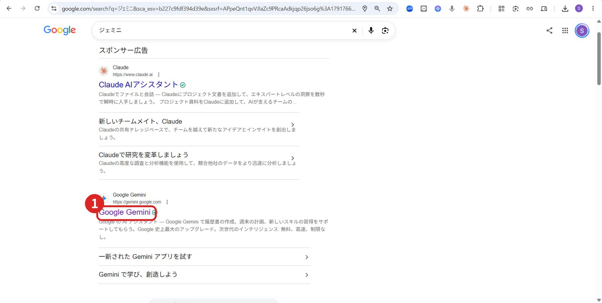
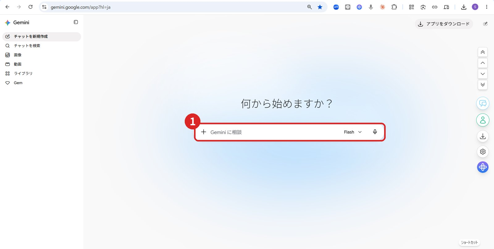
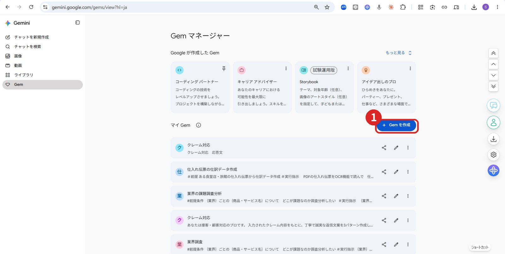
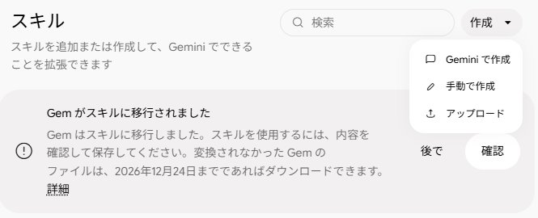
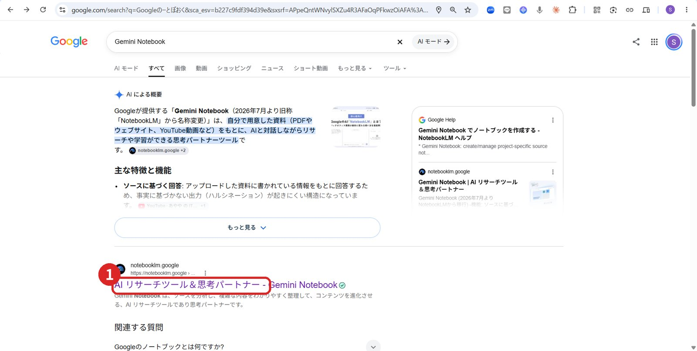
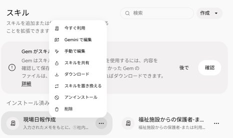
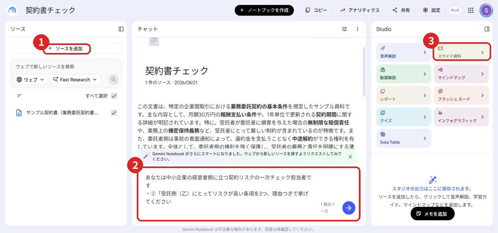
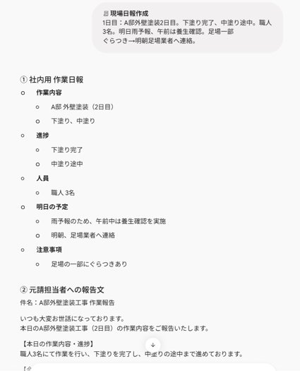
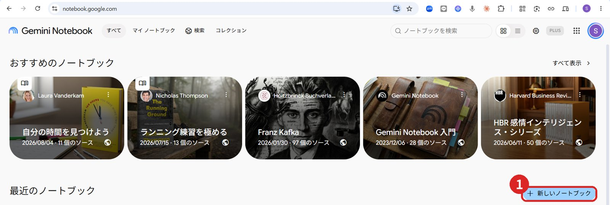

集合研修 第1回演習問題（予習用）
実践応用編（プロンプト・GEM・Gemini Notebook）。集合研修の前に、内容の確認と予習ができます。
📌 このページの使い方
・演習の手順・見本のプロンプト・操作画面を、ここで確認できます。見本のプロンプトは「📋 コピー」ボタンでコピーできます。最初から見本をコピーして使うと早く進められます。最初から見本をコピーして使うと早く進められます。最初から見本をコピーして使うと早く進められます。
・黄色の記入欄に書いた内容は、このパソコン（ブラウザ）に自動で保存されます。ほかの端末には引き継がれません。
・集合研修の当日の成果物は、Googleドライブ「04集合研修用」フォルダの中の、自分の班のフォルダ（1班〜6班）に保存します。
📁 Googleドライブ「04集合研修用」フォルダを開く
📥 サンプルデータ置き場（Googleドライブが開けない場合はここから）
演習で使うサンプルデータです。Googleドライブのフォルダが開けない場合は、ここからコピーするか、テキストファイルとして保存して使ってください。
📝 この資料の進め方
① 各演習は「やること」→「見本のプロンプト」→「手順」→「確認ポイント」の順に書いてあります。上から順に進めてください。
② 灰色の枠の「見本のプロンプト」は、最初からコピーしてそのまま使って構いません。そのほうが早く進められます。慣れてきたら、【 】の部分や業種・場面を自社向けに書き換えてみましょう。
③ 8＋1の項目のうち、必ず書くのは「＃実行指示」だけです。ほかは、必要だと思うものを選んで足します。
④ 赤い番号が付いた画像は、操作画面です。番号の順にクリック・入力してください。
⑤ 時間が足りないときは「必須」と書かれた演習だけ進めれば大丈夫です。「時間があれば」の演習は、余裕があるときに取り組んでください。
📌 8＋1の法則 早見表（必須は実行指示だけ。見ながら進めましょう）
【入力設計】AIに渡す材料を決めます
＃前提条件 どんな場面で、何のために使うか
＃役割定義 AIにどんな担当者・専門家として考えてほしいか
＃対象者 誰に向けた文章か（年齢・立場・知識レベル）
＃参考情報 AIに使ってほしい材料（文章・資料・調べる範囲）
＃実行指示 してほしい作業を、動詞（〜してください）で書きます（★必須）
【出力設計】受け取る形を決めます
＃品質条件（＋制約条件） 文字数・項目数・必ず入れたい内容／守る範囲・避ける内容（断定しすぎない、専門用語を控える など）
＃出力形式 メール・箇条書き・表など、使う場面に合わせた形
＃文体・トーン ていねい、親しみやすい、簡潔など
【＋1】仕上げに整えます
＃禁止事項 AIに避けてほしいこと（もっともらしい間違いを防ぎます）
＃専門視点・＃追加条件 誰の視点で見るか／どの基準で整えるか（例：「矛盾があれば最後に指摘して」）。プロンプトの中に書いておきます
★ 必須なのは「＃実行指示」だけです。ほかの項目は、出力をよくするために必要だと思うものだけを足します。全部を書く必要はありません。「＃」で始まる見出し行は、消さずにそのままAIに入力して大丈夫です。出力を見てから「もっと短く」などと送るのは「修正の依頼」で、＋1とは別のものです。
準備 Gemini（ジェミニ）を開きましょう
この演習ではAIとして「Gemini」を使います。次の手順でGeminiを開き、プロンプトを入力する場所を確認してください。Googleアカウントでログインしておきます。
①ブラウザ（Chrome）の検索欄に「ジェミニ」と入力して検索します。
②検索結果の中から「Google Gemini」をクリックします（画像の①）。

【画像】「ジェミニ」で検索した画面。①の「Google Gemini」をクリックします。
③Geminiが開きます。「何から始めますか？」の下にある入力欄（画像の①）が、プロンプトを入力する場所です。

【画像】Geminiの入力画面。①の入力欄にプロンプトを入力して、右端の送信ボタン（またはEnterキー）で送ります。
💡 入力のコツ
・入力欄の中で改行したいときは「Shift＋Enter」を押します。Enterだけを押すと、その時点で送信されてしまうので注意してください。
・見本のプロンプトをコピーして貼り付けるときは「Ctrl＋V」で貼り付けます。
・前の会話と混ざらないように、新しい演習を始めるときは、画面左上の「チャットを新規作成」をクリックして、新しいチャットで始めます。
S1 プロンプト実践（動画②の応用） 30分
🔖 必須：演習1-1・1-2 ／ 演習1-4は時間があれば
プロンプトの書き方で、AIの出力が大きく変わることを体験します。同じ文章を使って、「書き方を変える前」と「変えた後」を比べます。
⭐必須 演習1-1 書き方で出力はどう変わる？（Before / After の比較） 10分
🎯 この演習でやること
同じサンプル文章を、①「いい感じに書き直して」という短い依頼と、②8＋1の型で書いた見本のプロンプトの2通りでGeminiに依頼し、出力を比べます。
📄 サンプル文章（全員この文章を使います）
10月より、下記の通り営業時間を変更いたします。
平日は9時から18時まで、土日は10時から17時までとなります。
祝日は休業とさせていただきます。
ご不便をおかけしますが、よろしくお願いいたします。
①Geminiの入力欄に、次のプロンプトAを入力して送信します。「（サンプル文章）」の部分には、上のサンプル文章を貼り付けます。
プロンプトA（比較用の短い依頼）
いい感じに書き直して。
（ここに上のサンプル文章を貼り付ける）
②出力された文章を読み、「そのままお客様に出せるか」「長さは適切か」を確認します。
③画面左上の「チャットを新規作成」をクリックして、新しいチャットを開きます。
④下の「見本のプロンプト」をコピーして新しいチャットに貼り付け、「（ここにサンプル文章を貼り付ける）」の部分にサンプル文章を貼り付けて送信します。
見本のプロンプト（コピーしてそのまま使えます）
＃前提条件
飲食店が、10月からの営業時間の変更をお客様にお知らせする場面です。
＃対象者
来店されるお客様です（年齢は幅広く、常連の方も初めての方もいます）。
＃実行指示
下の「＃元の文章」を、お客様向けのお知らせ文に書き直してください。
＃品質条件
全体で150字以内にしてください。営業時間の変更点が一目でわかるようにしてください。
＃禁止事項
元の文章にない情報（日付・時間など）を付け足さないでください。
＃元の文章
（ここにサンプル文章を貼り付ける）
⑤①の出力と比べて、下の表に○△×を記入します。余裕があれば、＃役割定義や＃文体・トーンを足して、出力がどう変わるか試してみましょう。
📊 比べてみましょう（出力を見て、○△×などで記入）
| 見る観点 | ①「いい感じに」の出力 | ②8＋1の出力 |
|---|
| そのままお客様に出せるか | | |
| 長さ・形は使いやすいか | | |
| 営業時間の内容は正確か | | |
⭐必須 演習1-2 自社向けのプロンプトを作る 12分
🎯 この演習でやること
下の見本のプロンプトをコピーし、【 】の部分を自社（または身近なお店・会社）の内容に書き換えて、Geminiで動かします。架空の内容でも構いません。
STEP1題材を1つ選びます。「元の文章」は、下の例をそのまま使っても、自社の文章（1〜2文）に変えても構いません。
| 題材（1つ選ぶ） | 元の文章の例（思いつかない場合はこのまま使えます） |
|---|
| お客様へのお知らせ文 | 来月から、ランチメニューの価格を100円値上げします。 |
| 社内連絡メール | 明日の定例会議は、14時から15時に変更になりました。 |
| SNS投稿文 | 今週末限定で、季節限定のいちごパフェを販売します。800円です。 |
| 求人票の一部 | 接客スタッフ募集。時給1,100円。週3日から。未経験歓迎。 |
STEP2下の見本のプロンプトをコピーし、【 】の部分を書き換えます。「＃実行指示」は必ず残します。
見本のプロンプト（【 】を書き換えて使います）
＃前提条件
【業種（例：飲食店）】が、【伝えたい内容（例：ランチの値上げ）】を知らせる場面です。
＃対象者
【読む人（例：来店される常連のお客様）】です。
＃実行指示
下の「＃元の文章」を、【文書の種類（例：お客様向けのお知らせ文）】に書き直してください。
＃品質条件
【文字数（例：120字以内）】にしてください。
＃禁止事項
元の文章にない情報（金額・日付・理由など）を付け足さないでください。
＃元の文章
（STEP1で選んだ元の文章を貼り付ける）
STEP3書き換えたプロンプトを、新しいチャットに入力して送信します。
STEP4出力を確認し、「もっと短く」「もう少しやわらかく」など、修正の依頼を同じチャットで送って整えてみましょう。
✅ 確認ポイント
・そのまま使えそうな文章が出力されましたか？
・修正を依頼したら、思った通りに直りましたか？
演習1-4 プロンプトをテンプレート化する 5分 （時間があれば）
プロンプトの中で、毎回書き換えたい部分を { } で囲みます。そうすると、{ } の中身だけを入れ替えれば、同じ型のプロンプトを何度でも使い回せて、誰が使っても同じ品質の出力を得られます。
テンプレートの例
＃前提条件
{業種}の{店名}が、{お知らせの内容}を伝える場面です。
＃対象者
{対象者}
＃実行指示
下の元の文章を、{文書の種類}に書き直してください。
＃文体・トーン
{文体}
＃元の文章
{元の文章}
--- 変数の入れ方の例 ---
{業種}＝飲食店 {店名}＝自店 {お知らせの内容}＝価格改定 {対象者}＝来店客 {文書の種類}＝掲示文 {文体}＝ていねい
①演習1-2の見本で【 】にした部分が、そのまま { } （変数）になります。上の例のように { } に置き換えたものを、Googleドキュメントなどに保存しておきます。
②{ } の中身を別の業種・別の内容に入れ替えて、もう一度Geminiで試します。
✅ 確認ポイント
・{ } の中身だけを変えれば、来月・来年も同じプロンプトを使い回せそうですか？
・班のメンバーの業種に合わせて { } を書き換えても、同じ品質の出力が得られましたか？
S2 議事録 → 要約 → 調査 → Googleスライド（動画④の応用） 40分
🔖 必須：STEP1 ／ STEP2・STEP3は時間があれば
会議メモをもとに、①要約 ②関連する調査 ③スライドの下書き、までをGemini1本で行います。STEP1〜3は、同じチャットの続きで進めます（前の出力をGeminiが覚えているので、「先ほどの要約」と書くだけで伝わります）。
⭐必須 STEP1 議事録を要約する 8分
📄 サンプル会議メモ（全員この会議メモを使います）
2026年7月10日（木）14:00〜15:00
参加者：田中（店長）、山田（副店長）、佐藤・鈴木（スタッフ）
■今月の売上について
先月比で売上が8%減少。客数は変わっていないが客単価が下がっている。
→原因として「ランチメニューが3年変わっていない」という意見が出た。
→山田から「競合のB店が新メニューを週替わりで出している」という情報あり。
■夏のイベントについて
お盆期間（8/10〜8/16）に特別コースを出してはどうか（田中提案）。
価格帯は3,500円〜5,000円を想定。地元食材を使ったコースが差別化になる。
佐藤：「SNSで映える料理にしないと集客が難しい」と指摘。
■次回会議：7月17日（木）14:00
🎯 この演習でやること
下の見本のプロンプトをコピーし、「（ここにサンプル会議メモを貼り付ける）」の部分に上の会議メモを貼り付けて、Geminiに入力します。出力が「全体要約・主な議題・次回までの課題・次回会議の日時」の順になっているか確認します。
見本のプロンプト（コピーしてそのまま使えます）
＃前提条件
飲食店の店長が、会議に出られなかったスタッフに内容を共有するために、議事録を整理する場面です。
＃実行指示
下の「＃会議メモ」を要約してください。
＃出力形式
次の順で出力してください。①全体要約（3文以内） ②主な議題（箇条書き） ③次回までの課題（箇条書き） ④次回会議の日時
＃文体・トーン
簡潔な「です・ます」調にしてください。前置きや挨拶は不要です。
＃禁止事項
会議メモに書かれていない内容を付け足さないでください。
＃会議メモ
（ここにサンプル会議メモを貼り付ける）
STEP2 議題に関連する調査をする 12分 （時間があれば）
サンプル会議メモには、課題になりそうな話題が複数出てきます。次の3つから1つだけ選びます（複数を同時に扱うと調査結果がぼやけます）。見本のプロンプトは①の場合なので、迷ったら①を選べば、見本をそのまま同じチャットの続きに貼り付けて使えます。
| 番号 | 課題の候補 |
|---|
| ① | ランチメニューが3年変わっていない（マンネリ化・客単価の低下） |
| ② | 競合のB店が新メニューを週替わりで出している（競合への対策） |
| ③ | SNSで映える料理にしないと集客が難しい（情報発信・見た目の工夫） |
見本のプロンプト（課題①の場合。コピーしてそのまま使えます）
＃前提条件
地域密着のレストランの店長です。会議で「ランチメニューが3年変わっておらず、客単価が下がっている」という課題が出ました。
＃役割定義
中小飲食店の売上改善に詳しい経営コンサルタントとして考えてください。
＃実行指示
インターネット上の公開情報を調べて、次の3点をまとめてください。出典（サイト名またはURL）も示してください。 1. 一般的な原因と対策（中小企業向け・実践的なもの） 2. 同業他社の成功事例（2〜3つ） 3. 今すぐ取り組める、費用をかけない改善アクション
＃出力形式
3つの見出しごとに、箇条書きでまとめてください。前置きは不要です。
＃禁止事項
出典が確認できない数字や事例は書かないでください。
確認：出力に出典（サイト名やURL）が付いているか、リンクを開いて確かめましょう。AIの調査結果は、必ず人の目で裏付けを確認します。
STEP3 Googleスライドの構成をGeminiに下書きさせる 20分 （時間があれば）
見本のプロンプトを、同じチャットの続きにそのまま貼り付けます（前の要約と調査結果をGeminiが覚えています）。「次のアクション」は、調査結果をふまえて「誰が・何を・いつまでに」やるかです。担当者は役割名（店長、スタッフAなど）で構いません。
見本のプロンプト（コピーしてそのまま使えます）
＃対象者
社内スタッフです。
＃実行指示
この会話の中の「会議の要約」と「調査結果」をもとに、共有スライドの構成案を作ってください。
＃品質条件
スライドは5〜6枚にしてください。最後のスライドは「次のアクション（誰が・何を・いつまでに）」にしてください。
＃出力形式
各スライドを「タイトル＋箇条書き3点以内」で出力してください。
スライドにするまでの手順
①Geminiが出力したスライド構成をコピーします。
②Googleスライド（slides.google.com）で、新しいプレゼンテーションを作成します。
③各スライドに、Geminiの出力内容を貼り付けて整えます。
⚡ 時短のヒント（有料プランの方）
Google AI Proなどの有料プランをお使いの方とかCanvas機能を＋に追加すれば、Geminiに直接「Googleスライド形式で作成してください」と指示すると、コピー＆貼り付けなしでスライドができる場合があります。無料アカウントの方や、うまくいかない場合は、上の手順で進めてください。
S3 スキル作成実践（旧GEM・動画⑤の応用） 30分
🔖 全て必須
📢 GEMは「スキル」に変わりました
・個人のGoogleアカウントでは、2026年11月17日から順番に、GEMが「スキル」に移行しています。考え方は同じで、指示書（カスタム指示）を一度登録すれば、あとは入力するだけです。
・変わったのは2つです。①作る場所：左メニューの［その他］→［カスタマイズ］→［スキル］。②使い方：新しいチャットでスキルを呼び出し、続けて入力します（GEMのように専用の画面に移る必要はありません）。
・動画⑤でGEMを作った人は、スキル画面の「すべて」の中に入っています。「確認」して保存すると使えます。
・会社のアカウントなどで、まだGEMが表示される人はGEMのままで構いません（STEP3の最後を参照）。
👨🏫 スキルを使うメリット
・一度作れば、次からは入力するだけです（プロンプトを打ち直す手間がなくなります）
・チームで共有できます（ベテランのノウハウをスキルにすれば、新人でも同じ品質で対応できます）
・毎回同じ品質の出力が得られます（担当者による差が出にくくなります）
「毎回同じような文章を作っている業務」があれば、それがスキル化のチャンスです。
⭐必須 STEP1 作るスキルを1つ選ぶ 5分
講師が紹介した「業種別のスキル」から、自社に近いものを1つ選びます。それぞれに見本のカスタム指示と、3日分の入力例があります。
| スキル名 | 入力するもの | 出力されるもの | 向いている業種 |
|---|
| 現場日報作成 | 現場の走り書きメモ | 日報・元請への報告文 | 建設 |
| KY活動作成 | 作業内容・場所・天候 | 危険と対策・朝礼の話 | 建設・製造 |
| お知らせ文作成 | 行事・連絡の要点 | 保護者向け文書＋LINE文 | 福祉・保育 |
| 口コミ返信作成 | お客様の口コミ | お礼・お詫びの返信文 | 観光・宿泊・飲食 |
| 自社紹介文作成 | AIの質問に答える | HP・求人・補助金に使える文章 | 全業種 |
| 自社オリジナル | 毎回入力している内容 | 毎回ほしい出力 | 自社に合わせる |
スキルを試すときは、下の入力例を1日目から順にコピーして使います。同じスキルに違う内容を3回入れて、毎回同じ形で出てくることを確かめるのが、この演習の目的です。
📄 各スキルの入力例（同じスキルに、1日目→2日目→3日目と続けて入力します）
【現場日報作成】用
1日目：A邸外壁塗装2日目。下塗り完了、中塗り途中。職人3名。明日雨予報、午前は養生確認。足場一部ぐらつき→明朝足場業者へ連絡。
2日目：A邸外壁塗装3日目。雨で午前中止、午後から中塗り再開し7割完了。職人2名。施主様から色見本の追加依頼あり。
3日目：B社倉庫の屋根補修。雨漏り箇所2か所のシーリング完了。職人2名。残り1か所は板金交換が必要→見積もりを作って元請に提出予定。
【KY活動作成】用
1日目：作業内容：屋根の板金交換／場所：2階建て住宅の屋根の上／天候：晴れ、風がやや強い／作業人数：2名
2日目：作業内容：外壁の足場組立て／場所：3階建てアパートの道路側／天候：曇り／作業人数：4名／通行人あり
3日目：作業内容：電動丸のこでの木材切断／場所：作業場の屋内／天候：雨／作業人数：3名（うち1名は入社1か月）
【お知らせ文作成】用
1日目：12月20日（土）10時〜11時半 クリスマス会／持ち物：上履き・水筒／保護者の参加は2名まで／欠席は前日までに連絡
2日目：インフルエンザが流行しているため、12月中は送迎時に玄関で検温と手指消毒をお願いしたい／37.5度以上はお休み
3日目：年末年始の休み 12月29日〜1月3日／1月4日（月）から通常どおり／休み中の緊急連絡は園長の携帯へ
【口コミ返信作成】用
1日目：料理はとても美味しかったです。ただ、チェックインのときにかなり待たされたのが残念でした。（評価★3）
2日目：スタッフの皆さんがとても親切で、子どもにも優しくしてくれました。また家族で来たいです。（評価★5）
3日目：部屋のエアコンの音がうるさくて眠れませんでした。値段の割に満足できませんでした。（評価★2）
【自社紹介文作成】用（入力は「始めてください」だけ。あとは質問に答えます）
回答例：住宅の外壁塗装・屋根工事の会社です／創業30年、職人8名／強みは自社職人だけで施工し、10年保証を付けていること／お客様は地元の一般住宅が中心／今後は若手職人を採用し、工場・倉庫の塗装にも広げたい
⭐必須 STEP2 カスタム指示を用意する（見本をコピー） 5分
選んだスキルの「見本のカスタム指示」をコピーします。最初はそのまま使って構いません。自社向けにするなら、＃前提条件の業種・場面だけを書き換えます。カスタム指示は8＋1の見出しで書き、「＃実行指示」は必須です。
見本のカスタム指示（現場日報作成）
＃前提条件
建設現場で、その日の作業が終わったあとに日報と元請への報告文を作る場面です。このあとに、現場の走り書きメモが入力されます。
＃役割定義
現場経験の長い、建設会社の現場管理者として考えてください。
＃実行指示
入力されたメモをもとに、①社内用の作業日報と、②元請の担当者に送る報告文の2つを作成してください。
＃出力形式
①は「作業内容・進捗・人員・明日の予定・注意事項」の見出しで箇条書き。②はメールにそのまま貼れる本文にしてください。前置きは不要です。
＃禁止事項
メモにない事実（原因・数量・時間など）を書かないでください。
見本のカスタム指示（KY活動作成）
＃前提条件
建設・製造の現場で、朝礼の前に危険予知（KY）活動の内容を準備する場面です。このあとに、作業内容・場所・天候が入力されます。
＃役割定義
安全管理に詳しい現場の職長として考えてください。
＃実行指示
入力された内容から、起こりうる危険を3つ挙げ、それぞれの対策を示してください。最後に、朝礼で話す1分程度の注意の言葉を作ってください。
＃出力形式
「危険」「対策」の表と、朝礼で読み上げる文章にしてください。
＃禁止事項
入力にない作業や機械を前提にしないでください。法令の条文を断定的に引用しないでください。
見本のカスタム指示（お知らせ文作成）
＃前提条件
保育園・福祉施設で、行事や連絡を保護者・ご家族に知らせる場面です。このあとに、行事・連絡の要点が入力されます。
＃対象者
園児の保護者・利用者のご家族です。
＃実行指示
入力された要点をもとに、①配布用のお知らせ文と、②LINEで送る短い連絡文の2つを作成してください。
＃出力形式
①は見出し・日時・持ち物・お願いの順。②は100字程度にしてください。
＃禁止事項
入力にない日時・持ち物・費用を付け足さないでください。
見本のカスタム指示（口コミ返信作成）
＃前提条件
旅館・ホテル・飲食店で、お客様の口コミに返信する場面です。このあとに、お客様の口コミが入力されます。
＃役割定義
お客様対応に慣れた支配人として考えてください。
＃実行指示
入力された口コミに対する返信文を作成してください。お礼を述べ、不満な点があればお詫びと今後の改善を伝えてください。
＃出力形式
200字程度。口コミサイトにそのまま貼れる本文にしてください。前置きは不要です。
＃禁止事項
口コミにない事実を書かないでください。返金・無料などの約束はしないでください。
見本のカスタム指示（自社紹介文作成）
＃前提条件
中小企業の経営者が、ホームページ・求人票・補助金申請に使う自社紹介文を作る場面です。
＃役割定義
中小企業の魅力を引き出すのが得意な、取材記者として考えてください。
＃実行指示
ユーザーが「始めてください」と入力したら、会社の事業内容・強み・お客様・働く環境・今後の目標について、1問ずつ質問してください。5問答え終わったら、回答をもとに自社紹介文を作成してください。
＃出力形式
ホームページ用（300字）、求人票用（200字）、補助金申請用（300字・です・ます調）の3つを見出し付きで出力してください。
＃禁止事項
回答にない実績・数字・受賞歴を付け足さないでください。
⭐必須 STEP3 スキルを作成・呼び出して使う 20分
①左側のメニューの［その他］をクリックし、［カスタマイズ］を選びます。

【画像】左メニューの［その他］→［カスタマイズ］をクリックします。
②上のタブで［スキル］を選び、右上の［作成］→［手動で作成］をクリックします。（「Gemがスキルに移行されました」と表示された人は、［確認］を押すと、以前作ったGEMを確認・保存できます。）

【画像】スキル画面。右上の［作成］→［手動で作成］を選びます。
③スキルの作成画面で、次の3つを入力し、右上のボタンで保存します（保存されると「保存済み」と表示されます）。

【画像】スキルの作成画面。「名前」「説明」「カスタム指示」を入力して保存します。
| 入力欄 | 入力する内容 |
|---|
| 名前 | STEP1の表の「スキル名」（例：現場日報作成） |
| 説明 | このスキルが何をするかを一言で（例：入力されたメモをもとに、社内用の作業日報と、元請への報告文を作成） |
| カスタム指示 | STEP2でコピーした見本のカスタム指示を貼り付けます |
| ファイルを追加（任意） | マニュアルや料金表など、毎回参考にしてほしい資料があれば追加します。演習では不要です |
④新しいチャットを開き、作ったスキルを呼び出します。スキル画面で作ったスキルの［…］→［今すぐ利用］をクリックするか、チャットの入力欄に「/」（半角スラッシュ）を入力して、候補から選びます。

【画像】スキルの［…］→［今すぐ利用］で、新しいチャットにスキルが入ります。
⑤入力欄にスキル名が表示されたら、続けて入力例の「1日目」を貼り付けて送信します。

【画像】入力欄の上にスキル名（現場日報作成）が表示され、その下に入力例を貼り付けた状態。
⑥出力を確認します。カスタム指示で決めた見出し・形式で出力されていれば成功です。

【画像】出力例。①社内用の作業日報、②元請への報告文の2つが出力されます。
⑦もう一度新しいチャットを開き、スキルを呼び出してから「2日目」を入力します。続けて「3日目」も同じように試し、3回とも同じ形式で出力されるか確かめます。
💡 チャット欄に入れるのは「指示」ではなく「その日のデータ」です
指示はスキル（カスタム指示）に登録済みです。毎日の仕事では、スキルを呼び出して、その日のメモや口コミをそのまま貼るだけで、決まった形の文書ができます。これが、スキルを作るいちばんのメリットです。
⑧出力を直したいときは、スキル画面で作ったスキルの［…］→［手動で編集］を選び、カスタム指示を書き直して保存します。毎回同じ修正を依頼しているなら、その内容をカスタム指示に書き足しておくと、次から最初の出力で反映されます。
⑨（時間があれば）作ったスキルを共有します。スキルの［…］→［スキルを共有］から、班のメンバーに送ってみましょう。
💡 画面に「スキル」が表示されない人は
・まだGEMが表示される人（会社のアカウントなど）：これまでどおりGEMを作成し、GEMのチャット欄に入力例を貼って試してください。カスタム指示は同じものが使えます。
・スキルもGEMも表示されない人：新しいチャットの最初に見本のカスタム指示を貼り、その下に入力例の「1日目」を貼って送信します。カスタム指示はGoogleドキュメントなどに保存しておき、毎回コピーして使います（演習1-4のテンプレートと同じ考え方です）。
・スキルを使うには、Geminiの「アクティビティ」の保存がオンになっている必要があります。オフの人は、講師または指導員に声をかけてください。
✅ 完成の確認基準
・1日目〜3日目の入力すべてで、同じ見出し・同じ形式の出力が得られましたか？
・そのまま使える（少し手直しすれば使える）文書になっていましたか？
・カスタム指示を直したら、次の出力に反映されましたか？
🚀 早く終わったら：STEP1の表から、まだ作っていない別のスキルをもう1つ作ってみましょう。2つのスキルを1つのチャットで続けて呼び出すこともできます。
S4 Gemini Notebookで資料をAI化する（動画⑥の応用） 30分
🔖 必須：STEP1・STEP2 ／ STEP3は時間があれば
Gemini Notebook（旧NotebookLM）は、自分が読み込ませた資料だけを根拠にAIが答えてくれるツールです。就業規則や業務マニュアルを読み込ませて、質問に答えてもらいます。
⭐必須 STEP1 資料を読み込ませる 10分
共通サンプル資料2点（就業規則の抜粋・業務マニュアルの抜粋）を、全員が使います。「04集合研修用」フォルダの中の「演習問題及び演習用データ」フォルダに、「サンプル資料_就業規則抜粋」と「業務マニュアル抜粋（新入社員向け）」の2ファイルが入っています。→ 「04集合研修用」フォルダを開く
①ブラウザの検索欄に「Gemini Notebook」と入力して検索し、「AI リサーチツール＆思考パートナー - Gemini Notebook」をクリックします（画像の①）。
 【画像】「Gemini Notebook」で検索した画面。①をクリックします。（検索欄に notebook.google.com と直接入力しても開けます）
【画像】「Gemini Notebook」で検索した画面。①をクリックします。（検索欄に notebook.google.com と直接入力しても開けます）
②Gemini Notebookのホーム画面が開きます。右上の「＋ 新しいノートブック」をクリックします（画像の①）。

【画像】Gemini Notebookのホーム画面。①の「＋ 新しいノートブック」をクリックします。
③「ソースを追加」をクリックし、「Googleドライブ」を選んで、「演習問題及び演習用データ」フォルダの2ファイルを両方選択して追加します（Gemini Notebookは複数の資料をまとめて読み込めます）。
 【画像】ノートブックの画面。左が「ソース」（①ここから資料を追加）、中央が「チャット」（②質問を入力する場所）、右が「Studio」（③スライドなどを自動作成する場所）です。
【画像】ノートブックの画面。左が「ソース」（①ここから資料を追加）、中央が「チャット」（②質問を入力する場所）、右が「Studio」（③スライドなどを自動作成する場所）です。
📄 サンプル資料（就業規則・業務マニュアル抜粋）
Googleドライブから読み込めない場合は、「ソースを追加」から「コピーしたテキスト」を選び、下の資料本文をコピーして貼り付けてください。
【就業規則（抜粋）】
第1条（勤務時間） 勤務時間は午前9時から午後6時までとする（休憩1時間を含む）。
第2条（有給休暇） 入社6ヶ月経過後、年10日の有給休暇を付与する。取得を希望する場合は、原則として3営業日前までに上長へ申請すること。緊急の場合はこの限りではない。
第3条（慶弔休暇） 本人結婚時5日、配偶者・実父母・子の死亡時5日、祖父母・兄弟姉妹の死亡時2日の休暇を付与する。
第4条（経費精算） 交通費・接待費等の経費は、領収書を添付の上、利用月の翌月10日までに経理担当へ提出すること。1万円を超える経費は事前に上長の承認を得ること。
第5条（服装・身だしなみ） 清潔感のある服装を心がけ、来客対応時はジャケット着用を基本とする。
第6条（情報セキュリティ） 顧客情報・取引先情報を含む資料は社外へ持ち出し禁止とする。社外での作業が必要な場合は上長の承認を得ること。
【新入社員向け業務マニュアル（抜粋）】
■電話対応 「お電話ありがとうございます、〇〇（会社名）でございます」と応答し、相手の会社名・氏名を復唱して確認する。
■来客対応 来客があった際は速やかに立ち上がり、担当者に取り次ぐ。お茶出しは来客後5分以内を目安とする。
■クレーム対応の初動 まずお客様の話を最後まで遮らずに聞く。その場での即答は避け、「担当者に確認の上、〇分以内に折り返します」と伝える。個人の判断で謝罪の範囲を確約しない。
■社用車の利用 使用前後に運転日報へ記入し、給油は満タン返却を原則とする。事故発生時は速やかに上長へ報告する。
⭐必須 STEP2 Q&Aで使ってみる 15分
①画面中央のチャット欄（画像の②）に、次の質問を順番に入力します（質問1と質問4は必須、質問2・3は時間があれば）。
📋 試してみる質問
【質問1】この資料の内容を3つのポイントで要約してください。
【質問2】新入社員が最初に覚えるべきことは何ですか？
【質問3】よくある質問（FAQ）を10個作ってください。
【質問4】サンプル資料の内容について、自分で考えた質問を入力してみましょう。
例：「有給休暇の申請期限は？」「クレームが来たときの初動対応は？」「経費精算はいつまでに提出すればいい？」
②回答の中に、番号付きの引用（資料のどの部分から答えたか）が付いているか確認します。番号をクリックすると、根拠となった資料の箇所が表示されます。
✅ 確認ポイント
・読み込ませた資料の内容に基づいた回答が得られましたか？
・回答の根拠となる資料の箇所が引用されていますか？
STEP3 班で活用アイデアを共有する 5分 （時間があれば）
💬 班で話し合うこと
・自社のどの資料をGemini Notebookに入れると一番役立ちそうですか？
・社内のどんな質問が減りそうですか？
・新人研修にどう使えそうですか？
🚀 早く終わったら：画面右側の「Studio」から、まだ試していない機能（音声解説・マインドマップ・インフォグラフィックなど）を作ってみましょう。就業規則・業務マニュアルが、それぞれどんな形に変わるか比べてみてください。
最後に 情報漏えい・サイバー攻撃対策についてのお話 約30分
第1回の最後に、講師から「情報漏えい・サイバー攻撃対策」について、「現状」「個人の対策」「中小企業の対策」「国の対策」の4つの視点でお話しします。演習はありません。
📝 お話の時間です
筆記用具をご用意ください。お話を聞きながら、自社で当てはまることをメモしておくと、あとで見直すときに役立ちます。